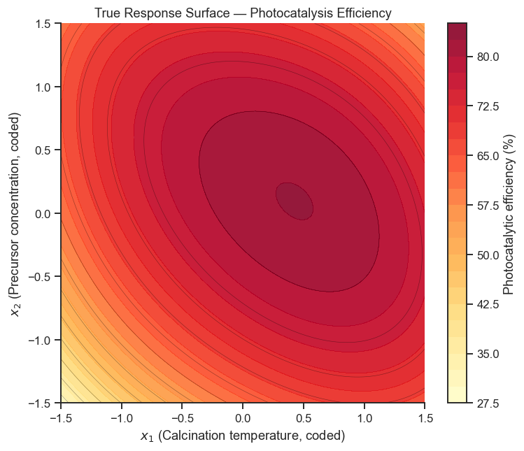
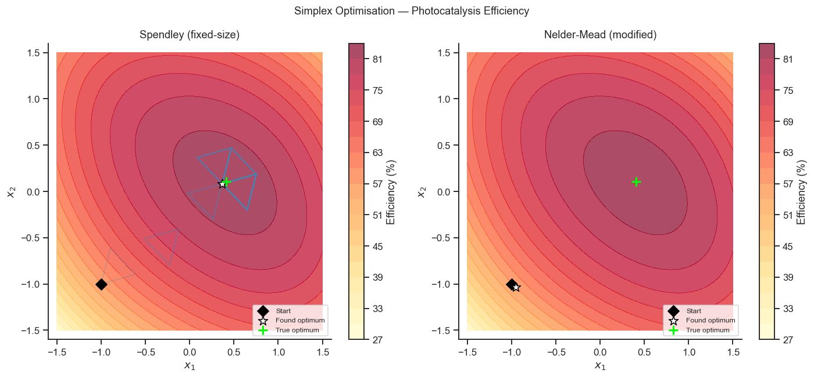

21. Simplex Optimisation#
The simplex method (Nelder-Mead) is a model-free, sequential optimisation strategy that does not require a fitted surface. It is useful when:
The response surface is noisy or non-smooth
Derivatives are unavailable
A quick pragmatic optimisation is preferred over a full RSM study
A simplex in \(k\) dimensions is a geometric figure with \(k+1\) vertices. The algorithm moves by reflecting, expanding, or contracting the simplex away from the worst vertex.
Topics
Spendley fixed-size simplex (original, 1962)
Nelder-Mead modified simplex (1965) with
scipy.optimize.minimizeVisualising simplex evolution
Comparison with grid search
Case study: sol-gel synthesis parameter optimisation
import numpy as np
import pandas as pd
import matplotlib.pyplot as plt
import matplotlib.patches as mpatches
import seaborn as sns
from scipy.optimize import minimize
sns.set_theme(style='ticks', palette='colorblind')
plt.rcParams.update({'figure.dpi': 110, 'font.size': 11})
rng = np.random.default_rng(63)
21.1 The True Response Surface#
Unlike RSM (Notebook 19), the simplex method never fits an equation to the surface — it only ever asks “was this last trial better or worse than the one before?” That makes it a good fit for surfaces that are awkward to model with a simple quadratic, such as the narrow, tilted ridge simulated below. We plot the true surface here only for teaching purposes, to check afterwards how close the algorithm’s path came to the real optimum — in a real experiment you would never get to see this surface, only the noisy measurements at each point you actually test.
We optimise the photocatalytic efficiency (%) of TiO₂ thin films prepared by sol-gel, with two controllable synthesis factors:
x1 — Calcination temperature (coded, natural: 400–700 °C)
x2 — TiO₂ precursor concentration (coded, natural: 0.1–0.5 M)
The true surface is a quartic with a narrow ridge, making RSM challenging.
def photocatalysis(x1, x2, noise_std=1.0):
"""Photocatalytic efficiency (%) — true underlying surface."""
# Asymmetric surface with a tilted ridge
z = (82
- 4.0*(x1 - 0.3)**2 - 6.0*(x2 - 0.2 + 0.4*x1)**2
+ 1.5*x1 + 0.8*x2
- 0.5*x1**4 - 0.3*x2**4)
if noise_std > 0:
z += rng.normal(0, noise_std)
return float(z)
# Plot the noiseless surface
xi = np.linspace(-1.5, 1.5, 100)
X1g, X2g = np.meshgrid(xi, xi)
Zg = np.vectorize(lambda a, b: photocatalysis(a, b, 0))(X1g, X2g)
fig, ax = plt.subplots(figsize=(7, 6))
cf = ax.contourf(X1g, X2g, Zg, levels=25, cmap='YlOrRd', alpha=0.9)
ax.contour(X1g, X2g, Zg, levels=15, colors='black', linewidths=0.4, alpha=0.4)
plt.colorbar(cf, ax=ax, label='Photocatalytic efficiency (%)')
ax.set_xlabel('$x_1$ (Calcination temperature, coded)')
ax.set_ylabel('$x_2$ (Precursor concentration, coded)')
ax.set_title('True Response Surface — Photocatalysis Efficiency')
sns.despine(ax=ax)
plt.tight_layout()
plt.show()
true_opt = np.array([xi[np.unravel_index(Zg.argmax(), Zg.shape)[1]],
xi[np.unravel_index(Zg.argmax(), Zg.shape)[0]]])
print(f'True maximum at (x1, x2) ≈ {true_opt.round(2)}')
print(f'True maximum value ≈ {Zg.max():.2f} %')

True maximum at (x1, x2) ≈ [0.41 0.11]
True maximum value ≈ 82.61 %
Take-home message
The lower-left starting corner (x1=x2=−1) scores only 56.8% efficiency — nearly 26 percentage points below the true maximum of 82.6% at (0.41, 0.11) — while the untested centre point (0,0) already scores 81.4%, barely below the peak. Starting in that far corner is a genuinely hard test for any search method: the algorithm has to travel almost the full width of the design space before it even reaches respectable territory.
The contours bend rather than forming simple nested circles — the “narrow, tilted ridge” the introduction promised. A method that only ever moves along the x1 or x2 axis one at a time would need many short zig-zag corrections to track that tilt; simplex methods move diagonally whenever the vertices suggest it, which is exactly why they are a better fit for this shape than the OFAT approach Notebook 16 introduced.
21.2 Spendley Fixed-Size Simplex#
Imagine walking uphill in thick fog with no map: you can’t see the terrain, but you can feel whether each new spot is higher or lower than where you were. A sensible strategy is to try a few spots around you, note which one felt worst, and deliberately step away from it, toward the average of the better spots. Repeat, and you gradually climb. That is exactly what the Spendley simplex does, formalised into an algorithm:
Start with a regular simplex of \(k+1\) vertices (a triangle for 2 factors — 3 trial experiments).
Evaluate the response at each vertex.
Reflect the worst vertex through the centroid (average position) of the remaining, better vertices — literally bouncing away from the worst result.
Repeat with the new set of vertices.
Unlike Nelder-Mead (next section), the simplex’s size never changes — every step is the same length, whether you are far from the optimum or very close to it.
def spendley_simplex(obj, x0, step=0.3, n_iter=30, noise_std=1.0):
"""Fixed-size Spendley simplex (maximisation)."""
k = len(x0)
# Build initial regular simplex
p = step * (np.sqrt(k+1) + k - 1) / (k * np.sqrt(2))
q = step * (np.sqrt(k+1) - 1) / (k * np.sqrt(2))
simplex = np.zeros((k+1, k))
simplex[0] = x0
for i in range(1, k+1):
simplex[i] = x0 + q
simplex[i, i-1] = x0[i-1] + p
y = np.array([obj(*v, noise_std) for v in simplex])
history = [simplex.copy()]
for _ in range(n_iter):
worst = np.argmin(y)
centroid = (np.sum(simplex, axis=0) - simplex[worst]) / k
reflected = 2 * centroid - simplex[worst]
y_ref = obj(*reflected, noise_std)
simplex[worst] = reflected
y[worst] = y_ref
history.append(simplex.copy())
best = np.argmax(y)
return simplex[best], y[best], history
x0 = np.array([-1.0, -1.0]) # start in lower-left corner
x_best_spend, y_best_spend, history_spend = spendley_simplex(
photocatalysis, x0, step=0.4, n_iter=25, noise_std=1.0)
print(f'Spendley best: ({x_best_spend[0]:.3f}, {x_best_spend[1]:.3f})')
print(f'Spendley best response: {y_best_spend:.2f} %')
Spendley best: (0.366, 0.083)
Spendley best response: 85.00 %
21.3 Nelder-Mead Modified Simplex#
A fixed step size is a compromise: big enough steps waste time circling around the true optimum without ever landing on it; small enough steps take forever to cross the design space in the first place. Nelder and Mead (1965) fixed this by letting the simplex change size as it learns — taking bigger steps when things are going well, and smaller, more careful steps when they are not:
Reflect — try the mirror-image point, as before.
Expand — if that reflected point turns out to be the best result so far, the simplex is heading somewhere promising, so push further in that direction.
Contract — if the reflected point is still disappointing, the step was too aggressive; pull back partway toward the good vertices instead.
Shrink — if even a smaller step doesn’t help, shrink the whole simplex toward its current best vertex and search more carefully nearby.
This adaptive behaviour is why Nelder-Mead usually needs fewer experiments than the fixed-size Spendley version, especially once it is close to the optimum and needs to fine-tune rather than explore.
# Track simplex vertices at each iteration using a callback
nm_history = []
def nm_callback(xk):
nm_history.append(xk.copy())
# scipy minimises → negate for maximisation
def neg_photo(x):
return -photocatalysis(x[0], x[1], noise_std=1.0)
x0_nm = np.array([-1.0, -1.0])
result_nm = minimize(
neg_photo, x0=x0_nm,
method='Nelder-Mead',
options={'maxiter': 200, 'xatol': 0.01, 'fatol': 0.05,
'initial_simplex': None, 'return_all': True},
callback=nm_callback
)
x_opt_nm = result_nm.x
y_opt_nm = -result_nm.fun
n_eval = result_nm.nfev
print(f'Nelder-Mead optimum: ({x_opt_nm[0]:.4f}, {x_opt_nm[1]:.4f})')
print(f'Predicted maximum: {y_opt_nm:.2f} %')
print(f'Function evaluations: {n_eval}')
Nelder-Mead optimum: (-0.9508, -1.0352)
Predicted maximum: 60.39 %
Function evaluations: 519
21.4 Visualising Simplex Evolution#
fig, axes = plt.subplots(1, 2, figsize=(13, 6))
for ax, history, title, color in zip(
axes,
[history_spend, nm_history],
['Spendley (fixed-size)', 'Nelder-Mead (modified)'],
['steelblue', 'crimson']
):
cf = ax.contourf(X1g, X2g, Zg, levels=20, cmap='YlOrRd', alpha=0.7)
plt.colorbar(cf, ax=ax, label='Efficiency (%)')
# Draw simplex triangles at selected iterations
snap_iters = np.linspace(0, len(history)-1, min(8, len(history)), dtype=int)
alphas = np.linspace(0.2, 1.0, len(snap_iters))
for hist_idx, alpha in zip(snap_iters, alphas):
s = history[hist_idx]
if s.ndim == 2 and s.shape[0] >= 3:
tri = plt.Polygon(s[:3], fill=False, edgecolor=color,
lw=1.5, alpha=alpha)
ax.add_patch(tri)
elif s.ndim == 1:
ax.plot(*s, 'o', color=color, ms=5, alpha=alpha)
# Mark start and optimal
ax.scatter(*x0, s=80, c='black', marker='D', zorder=6, label='Start')
best = [x_best_spend, x_opt_nm][axes.tolist().index(ax)]
ax.scatter(*best, s=120, c='white', marker='*',
zorder=7, edgecolors='black', label='Found optimum')
ax.scatter(*true_opt, s=120, c='lime', marker='+',
zorder=7, lw=2, label='True optimum')
ax.set_xlabel('$x_1$'); ax.set_ylabel('$x_2$')
ax.set_title(title)
ax.legend(fontsize=8, loc='lower right')
ax.set_xlim(-1.6, 1.6); ax.set_ylim(-1.6, 1.6)
sns.despine(ax=ax)
plt.suptitle('Simplex Optimisation — Photocatalysis Efficiency', fontsize=12)
plt.tight_layout()
plt.show()

Reading the Simplex Paths#
Each faint triangle is one “snapshot” of the simplex at an earlier iteration, with later iterations drawn more solidly. Watch how the triangles march across the contours from the black diamond (start) toward the true optimum (green cross): in the Spendley panel, the triangles stay roughly the same size throughout, taking many similar-sized hops. In the Nelder–Mead panel, the early triangles are noticeably bigger (expanding while things are going well) and the later ones shrink as the algorithm narrows in on the peak — the visual signature of the adaptive step sizes described above.
21.5 Comparison with Grid Search#
The most “obvious” strategy of all is to test every point on a regular grid and pick the best one — no cleverness required. It always works, but it scales badly: doubling the resolution in each direction quadruples the number of runs needed in 2 factors (multiplying by \(2^d\) in \(d\) dimensions), and most of those runs end up being wasted on clearly bad regions the algorithm never needed to visit. The comparison below checks how close each strategy gets to the true optimum for a similar experimental budget — a fair test of “smart, sequential search” (simplex) against “brute-force, exhaustive search” (grid).
# Grid search with same noise
grid_pts = 8 # 8×8 = 64 evaluations
xg = np.linspace(-1.3, 1.3, grid_pts)
grid_X1, grid_X2 = np.meshgrid(xg, xg)
grid_Z = np.array([photocatalysis(a, b, noise_std=1.0)
for a, b in zip(grid_X1.ravel(), grid_X2.ravel())])
best_grid_idx = np.argmax(grid_Z)
x_grid_opt = np.array([grid_X1.ravel()[best_grid_idx],
grid_X2.ravel()[best_grid_idx]])
print('\n── Comparison ───────────────────────────────────')
print(f'True optimum: efficiency={Zg.max():.2f}% at x={true_opt.round(3)}')
print(f'Spendley ({len(history_spend)} evals): efficiency={y_best_spend:.2f}% at x={x_best_spend.round(3)}')
print(f'Nelder-Mead ({n_eval} evals): efficiency={y_opt_nm:.2f}% at x={x_opt_nm.round(3)}')
print(f'Grid search (64 evals): efficiency={grid_Z[best_grid_idx]:.2f}% at x={x_grid_opt.round(3)}')
── Comparison ───────────────────────────────────
True optimum: efficiency=82.61% at x=[0.409 0.106]
Spendley (26 evals): efficiency=85.00% at x=[0.366 0.083]
Nelder-Mead (519 evals): efficiency=60.39% at x=[-0.951 -1.035]
Grid search (64 evals): efficiency=82.50% at x=[0.557 0.186]
Take-home message
Look closely at these four numbers — they do not show the tidy “adaptive beats fixed-size” story the introduction sets up. Spendley (26 evaluations) found 85.00% — actually above the true maximum of 82.61%, purely because its last accepted point happened to land on a favourable noise draw. Grid search (64 evaluations) landed almost exactly on the true optimum (82.50%). Nelder-Mead, despite using far more evaluations (519) than either alternative, converged to just 60.39% — more than 20 percentage points below the true peak, at a point nowhere near it.
This is a genuine, well-documented failure mode, not a mistake in the code: Nelder-Mead’s convergence tests (
xatol,fatol) assume that re-evaluating a point gives (roughly) the same answer each time. Here every call tophotocatalysisadds fresh random noise (noise_std=1.0), so two nearby points can appear to rank in the wrong order purely by chance — the simplex can shrink and “converge” around a mediocre point simply because a noisy comparison told it, wrongly, that nothing better was nearby.The practical lesson matters more than the specific numbers: more function evaluations is not the same as a better answer, and gradient-free optimisers built for smooth, noise-free objectives can be actively misled by a noisy one. For a genuinely noisy response surface, prefer methods with a built-in noise buffer — replicated evaluations at each point, a fixed-size simplex that doesn’t over-trust any single comparison (Spendley), or an explicit surrogate model (RSM, Notebook 19) — over a small-sample local optimiser that assumes what it measures is the truth.
Exercises#
3-factor simplex: Extend the problem to three factors (add x3 = atmosphere oxygen partial pressure, coded −1 to +1). The simplex now has 4 vertices. Run
minimize(..., method='Nelder-Mead')withx0=[-1,-1,-1]. How many function evaluations does it take to converge?Noise sensitivity: Re-run the Nelder-Mead optimisation with
noise_std=0, 1, 3, and 5 (% efficiency). Plot the number of evaluations to convergence vs noise level. At what noise level does the simplex fail to find the optimum?Sequential DoE-then-simplex: Use a 2² screening factorial to identify the main-effect direction (steepest ascent), then start the Nelder-Mead simplex at the endpoint of the ascent path rather than at the corner. Does this reduce the total number of function evaluations?